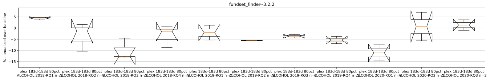
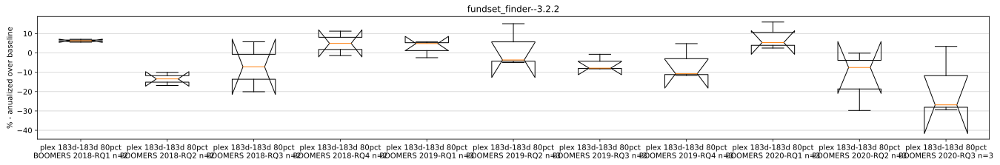
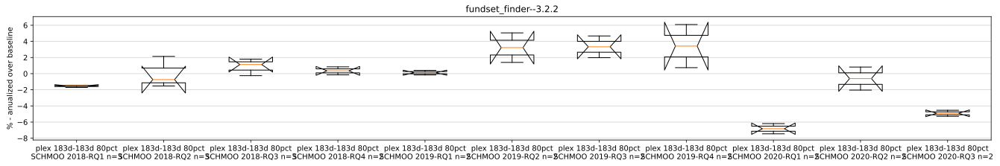
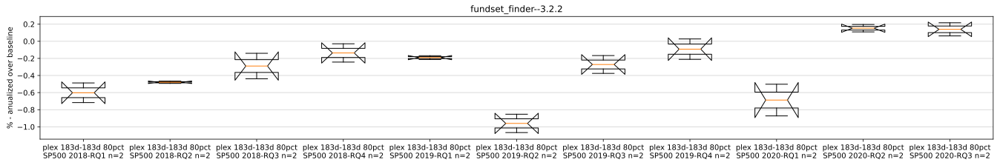
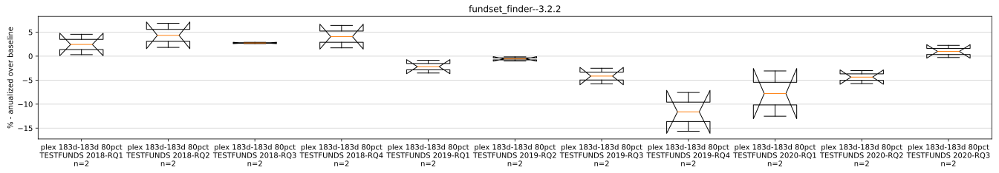
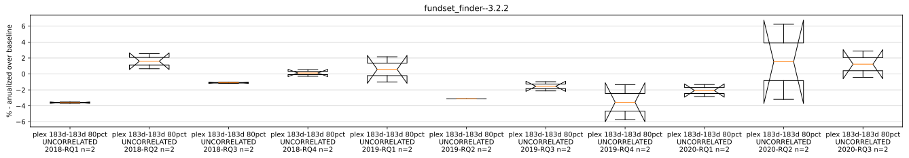
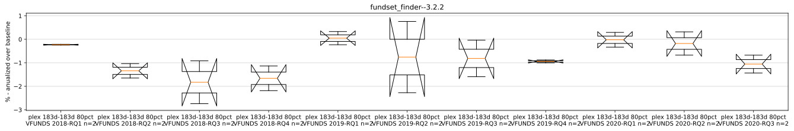

for each quarter in three years, plex a three year window fropping the previous quarter and adding the new quarter
tuner_plex.py --tune-timeout 1000 --num-threads 10 --num-iterations 30 --tune-time-span-days 183 --plex-skip 183 --window 0.80 --fund-set SCHMOO --start-date 2018-10-01 --end-date 2019-09-30 --results-file runs/batch_test--2021-10-09--210000/215305_tuner_plex--183d-183d--80pct--SCHMOO--2018-RQ4_results.json_or_yaml --sqlite-file palloc.sqlite
/usr/bin/timeout -s 2 -k 1005s 1000s ./palloc_tuner --dstock-cfg runs/run_1910197_364_1633828331.721114/2018-06-30--2017-12-30--seed--dstock_cfg.yaml --fund-set SCHMOO --dstock-use-seed --start-date 2017-12-30 --end-date 2018-06-30 --opentuner-db-name 2021-10-09--211213--2018-06-30--2017-12-30 --time-lane harmonious-clear-time --num-threads 10 --num-iterations 30 --window 0.80
dstock test report for fundset_finder
Super Set: None
Fund Set: ALCOHOL
Group: The Universal Group, Version: 3.2.2

min duration
0:37:59
avg duration
0:38:40
max duration
0:39:13
Fund Set: BOOMERS
Group: The Universal Group, Version: 3.2.2

min duration
0:36:15
avg duration
0:37:04
max duration
0:37:40
Fund Set: SCHMOO
Group: The Universal Group, Version: 3.2.2

min duration
0:37:40
avg duration
0:38:15
max duration
0:39:04
Fund Set: SP500
Group: The Universal Group, Version: 3.2.2

min duration
0:36:29
avg duration
0:36:54
max duration
0:37:32
Fund Set: TESTFUNDS
Group: The Universal Group, Version: 3.2.2

min duration
0:38:06
avg duration
0:39:24
max duration
0:40:36
Fund Set: UNCORRELATED
Group: The Universal Group, Version: 3.2.2

min duration
0:39:40
avg duration
0:41:11
max duration
0:42:20
Fund Set: VFUNDS
Group: The Universal Group, Version: 3.2.2

min duration
0:37:59
avg duration
0:38:38
max duration
0:40:08